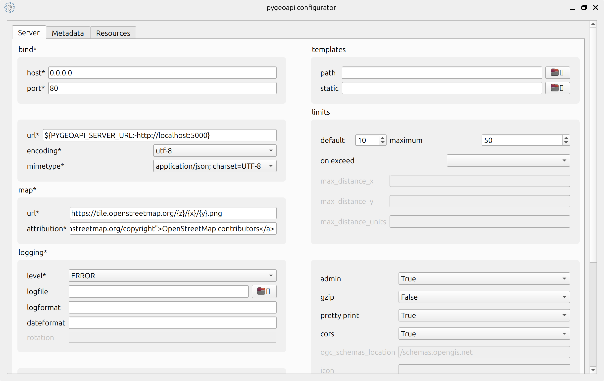
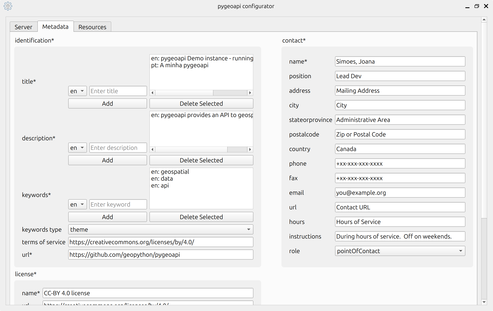
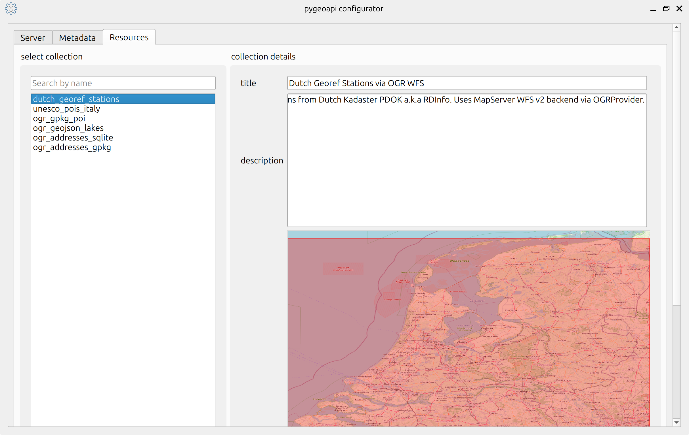

pygeoapi configurator plugin 🔧
pygeoapi is a python server implementation of the OGC API suite of standards; it is configured using a YAML file.
YAML is a markdown language for humans, but maybe not all humans are comfortable using it; this plugin is an attempt to lower the barrier to configure pygeoapi, by providing a UI to read and write that configuration. We have chosen QGIS as the environment to do this; first and foremost because most GIS users are already familiar with that environment, and hopefully this does not require them to install yet another tool; secondly because it suports different plattforms, enabling us to be inclusive.
After installing the plugin, you can access is it through the Plugins-> pygeoapi configurator-> Configure pygeoapi menus. The plugin will launch a dialog, which is subdivided in three tabs:
Server- lets you configure server options (e.g.: host, port, enable admin api, etc).Metadata- lets you configure the service metadata (e.g.: service title, contact information, title).Resources- lets you configure the actual resources; through this tab, you can view/edit/delete collections from the service; read here about which OGC APIs and providers are supported in the plugin.



You can read and write a configuration from a local file or from a server.
Using a Local File
The main motivation to develop this plugin is to provide an user friedly tool to read and write the pygeoapi config file.
- An user can open a config file from a pygeoapi instance and view the different options.
- They can go ahead and change options, as needed.
- After saving, they have updated their pygeoapi config file. Then they can go ahead and deploy it in a server with a pygeoapi instance or, if they use GitHub or similar, push it to an integration pipeline.
It is worth saying that the plugin establishes validation steps along the way.
If you want to read or write the configuration from a local file, scroll all the way to the bottom of the dialog and enable the Local file radio button. Then you can use the Open and Save buttons to load the file, or save the file.

Connecting to a Server
As an experimental feature, this plugin also supports pulling and pushing from/to a pygeoapi instance. This is provided more as an educational feature, for users to be able to play with a pygeoapi instance and immediatly see the effects. It can also be used with a local pygeoapi instance, to generate a pygeoapi config file interactively. Some important notes about this functionality:
- The pygeoapi admin API must be enabled on the pygeoapi running instance.
- The pygeoapi instance must be unprotected (i.e.: without authentication enabled).
- If you want to see the changes without restarting the service, you must run pygeoapi with hot reload.
It goes without saying that a combination of an unprotected instance and an enabled admin API creates a security risk that is unaceptable for production scenarios. For that reason it should be used for testing purposes only, without exposing the service to the Internet.
Run a pygeoapi docker container with hot reload, mounting a local configuration file:
docker run -p 5000:80 -v $(pwd)/example-config.yml:/pygeoapi/local.config.yml geopython/pygeoapi:latest run-with-hot-reload
If you want to pull or push configuration from/to a server, enable the Server Connection radio button at the bottom of the tab. Then a popup will be triggered, which lets you configure the host and port of the running server.

Validation
Generating a valid pygeoapi config file is one of the main concerns of this plugin. Several levels of validation are introduced in the plugin:
- Some UI widgets have masks which control for particular data types.
- When saving, an extensive validation is run; the plugin lets you open, but does not let you save, an invalid config file; the specific validation errors are flagged in a dialog and on the plugin log.
When saving the plugin creates a report of the specific changes that were made, and prompts the user to confirm those; this is done for transparency and for catching unintended changes.
The unit tests capture the consistency of the plugin, by opening and saving a config file.
Supported Resources
The plugin currently supports only a handfull of OGC APIs and providers. Please check the table bellow, for the specific details.
| Standard | Provider |
|---|---|
| OGC API - Maps | WMSFacade |
| OGC API - Features | PostgreSQL |
| OGC API - Tiles | MVT-proxy |
You can check the details about each provider in the the pygeoapi documentation. Providers that are not supported are set as read-only; i.e., they are shown in the UI, but cannot be modified.
Language
Some of the configuration keys (e.g.: title, description) can be multilingual, and that is supported through the UI. Bellow we show how to add a Portuguese translation for the instance title.

Although the plugin itself comes in English, there is some language support built in. This means that someone could create translations for other languages. If you are interested in providing a translation, you should work directly in the project repository to create a Pull Request.
Contributing 🤝
This website is a live project and we welcome contributions from the community! If you have suggestions for improvements, found a bug, or want to add new features, feel free to:
- Open an issue to start a discussion
- Submit a pull request with your proposed changes
We appreciate your support in making this website better!
License
This website is released under an MIT License